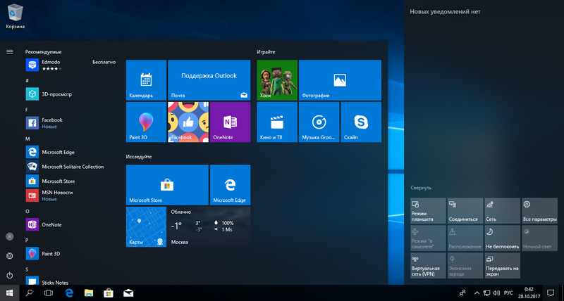
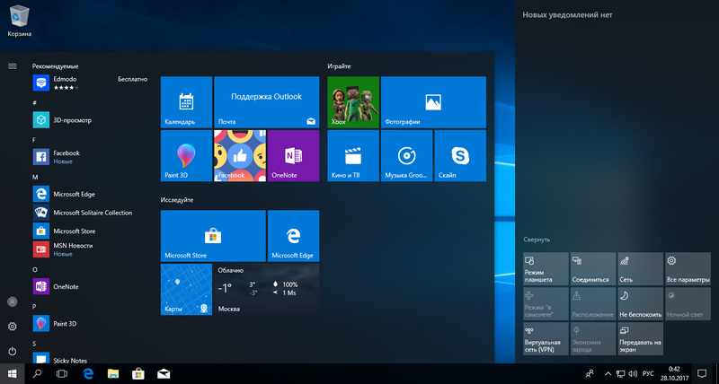

Windows — семейство коммерческих операционных систем (OC) корпорации Microsoft, ориентированных на применение графического интерфейса при управлении. Изначально Windows была всего лишь графической надстройкой-программой для операционной системы 80-х и 90-х годов MS-DOS. По состоянию на август 2014 года, под управлением операционных систем семейства Windows, по данным ресурса Net Applications, работает около 89% персональных компьютеров. Windows работает на платформах x86, x86-64, IA-64 и ARM. Существовали также версии для DEC Alpha, MIPS, PowerPC и SPARC.
1993
Windows NT 3.1
Windows NT 3.1 — первая операционная система линейки Microsoft Windows NT для серверов и корпоративных рабочих станций, выпущенная 27 июля 1993 года. Номер версии был выбран таким образом, чтобы соответствовать последней версии оболочки Windows 3.1, имевшей похожий интерфейс пользователя. Было доступно две редакции NT 3.1: Windows NT 3.1 и Windows NT Advanced Server.
1994
Windows NT 3.5
Windows NT 3.5 — вторая операционная система линейки Windows NT. Она была выпущена 21 сентября 1994 года.
Одной из главных целей разработки Windows NT 3.5 было увеличение скорости работы операционной системы; в результате проекту было присвоено кодовое название "Daytona", являющееся отсылкой к гоночной трассе Daytona International Speedway в Дейтона-Бич, Флорида.
1995
Windows NT 3.51
Windows NT 3.51 — третья операционная система линейки Microsoft Windows NT. Она была выпущена 30 мая 1995 года, через 9 месяцев после Windows NT 3.5. Основными нововведениями в данной версии стали поддержка архитектуры PowerPC, а также клиент-серверного взаимодействия с Windows 95, которая была выпущена на три месяца позже NT 3.51.Поддержка 3.51 продолжалась до 31 декабря 2001 года.
1996
Windows NT 4
Windows NT 4.0 — последняя версия семейства сетевых операционных систем Microsoft Windows NT, вышедшая под этим названием. Следующая сетевая операционная система от Microsoft вышла под названием Windows 2000.
Windows NT 4.0 имела пользовательский интерфейс в стиле Windows 95.
Windows NT 4.0 имела модификации для использования в качестве операционной системы рабочей станции (Windows NT Workstation) и сервера (Windows NT Server) и предназначалась для работы на компьютерах архитектур Alpha, MIPS, x86, PowerPC и PC98 (только японская версия).
2000
Windows 2000
Windows NT 5.0
Windows 2000 (также называемая Win2k, W2k или Windows NT 5.0, кодовое название Cairo) — операционная система семейства Windows NT компании Microsoft, предназначенная для работы на компьютерах с 32-битными процессорами.
2001
Windows XP
Windows NT 5.1
Windows XP (кодовое название при разработке — Whistler; внутренняя версия — Windows NT 5.1) — операционная система семейства Windows корпорации Microsoft. Была выпущена 25 октября 2001 года и является развитием Windows 2000 Professional. Название XP происходит от англ. experience («опыт», «впечатления»).
В отличие от предыдущей системы Windows 2000, которая поставлялась как в серверном, так и в клиентском вариантах, Windows XP является исключительно клиентской системой. Её серверным аналогом является Windows Server 2003.
2003
Windows XP 64-bit Edition
Windows NT 5.2
Это издание разрабатывалось специально для рабочих станций с архитектурой IA-64 и микропроцессорами Itanium. Это издание Windows XP более не развивается с 2005 года, после того, как HP прекратил разработку рабочих станций с микропроцессорами Itanium.
2003
Windows Server 2003
Windows NT 5.2
Windows Server 2003 (кодовое название при разработке — Whistler Server, внутренняя версия — Windows NT 5.2) — операционная система семейства Windows NT от компании Microsoft, предназначенная для работы на серверах. Она была выпущена 24 апреля 2003 года.
Windows Server 2003 является новой версией Windows 2000 Server и серверным вариантом операционной системы Windows XP. Изначально Microsoft планировала назвать этот продукт «Windows .NET Server» с целью продвижения своей новой платформы Microsoft .NET. Однако впоследствии это название было отброшено, чтобы не вызвать неправильного представления о .NET на рынке программного обеспечения.
2005
Windows XP Professional x64 Edition
Windows NT 5.2
Windows XP Professional x64 Edition (внутренняя версия — Windows NT 5.2) — операционная система семейства Windows NT корпорации Microsoft. Она была выпущена 25 апреля 2005, как версия Windows XP Professional для платформы x86-64 персональных компьютеров. Основным преимуществом перехода на 64-разрядную операционную систему является поддержка увеличенного объёма максимальной допустимой оперативной памяти в системе. В ней максимальный объём физической памяти увеличен до 128 Гб, а объём виртуальной памяти — до 16 Тб.
2006
Windows Vista
Windows NT 6.0
Windows Vista — операционная система семейства Windows NT корпорации Microsoft. Была выпущена 30 января 2007 года. На стадии разработки имела кодовое имя «Longhorn». Построена на основе гибридного ядра NT версии 6.0. В качестве сокращенного имени иногда используется акроним «WinVI», объединяющий две первые буквы названия и версию ядра в римской записи. Предназначена исключительно для рабочих станций и персональных компьютеров; её ориентированная на серверы «сестра» — Windows Server 2008.
2007
Windows Home Server
Windows NT 5.2
Windows Home Server — это серверная операционная система компании Microsoft, которая построена на основе Windows Server 2003 SP2 и ориентирована на домашних пользователей для использования в домашних сетях. Заявлено мощнейшее централизованное архивирование, новый подход к системным накопителям информации, полностью автономная работа и простая установка. Сервер выпущен на 4 языках: английском, французском, немецком и испанском.
2008
Windows Server 2008
Windows NT 6.0
Microsoft Windows Server 2008 (кодовое имя «Longhorn Server») — версия серверной операционной системы производства компании Microsoft. Выпущена 27 февраля 2008 года. Пришла на смену Windows Server 2003 как представитель нового поколения операционных систем семейства Vista (NT 6.x).
2008
Windows Small Business Server
Windows NT 6.0
Windows Small Business Server (SBS) (ранее Microsoft Small Business Server) — интегрированное программное серверное решение от компании Microsoft, разработанное для построения сети небольших компаний (до 75 пользователей или компьютеров).
В состав решения входят ключевые серверные продукты Microsoft для обеспечения необходимой для небольшой компании функциональности, такие как почтовый сервер Exchange Server, сервер для организации коллективной работы и публикации документов Windows SharePoint Services, сервер баз данных SQL Server, система доставки и установки обновлений Windows Server Update Services и др.
2009
Windows 7
Windows NT 6.1
Windows 7 — операционная система семейства Windows NT компании Microsoft , предназначенная для работы на компьютерах с 32-битными и 64-битными процессорами.
С июля 2011 до марта 2017 года Windows 7 занимала лидирующее положение по количеству пользователей в мире. По состоянию на май 2018 года доля Windows 7 составляет ▼ 23,4 % среди используемых в мире операционных систем для доступа к сети Интернет и занимает второе место в мире по популярности после Windows 10.
2009
Windows Server 2008 R2
Windows NT 6.1
Windows Server 2008 R2 — серверная операционная система компании «Microsoft», являющаяся усовершенствованной версией Windows Server 2008. Поступила в продажу 22 октября 2009. Как и Windows 7, Windows Server 2008 R2 использует ядро Windows NT 6.1. Новые возможности включают улучшенную виртуализацию, новую версию Active Directory, Internet Information Services 7.5 и поддержку до 256 процессоров. Это первая ОС Windows, доступная только в 64-разрядном варианте.
2011
Windows Home Server 2011
Windows NT 6.1
Windows Home Server 2011 (WHS) — кодовое имя «Vail», домашняя серверная операционная система семейства Windows, которая находится в процессе развития, предназначена для малого офиса/домашнего офиса.
2012
Windows 8
Windows NT 6.2
Windows 8 — операционная система, принадлежащая семейству Windows NT. Разработана корпорацией Microsoft. Версия ядра — 6.2. Поступила в продажу 26 октября 2012 года. По состоянию на май 2018 года, доля операционной системы Windows 8 среди используемых в мире для доступа к сети Интернет составляет ▼ 6,9 % и занимает третье место после Windows 7. Серверной версией является Windows Server 2012. На июль 2013 года было продано 100 миллионов лицензий.
2012
Windows Server 2012
Windows NT 6.2
Windows Server 2012 (кодовое имя «Windows Server 8») — версия серверной операционной системы от Microsoft. Принадлежит семейству ОС Microsoft Windows. Была выпущена 4 сентября 2012 года на смену Windows Server 2008 R2 как серверная версия Windows 8. Выпускается в четырёх редакциях.
Windows Server 2012 — первая версия Windows Server начиная с Windows NT 4.0, которая не поддерживает процессоры Itanium.
2013
Windows 8.1
Windows NT 6.3
Windows 8.1 — операционная система семейства Windows NT производства корпорации Microsoft. Предназначена для рабочих станций, персональных компьютеров и портативных устройств; версия, предназначенная для решения серверных задач — Windows Server 2012 R2. По сравнению с Windows 8 имеет ряд обновлений и изменений в работе с графическим интерфейсом. Windows 8.1, так же, как и Windows 8, ориентирована на сенсорные ПК, но не исключает возможности использования на классических ПК.
2013
Windows Server 2012 R2
Windows NT 6.3
Windows Server 2012 R2 – это новая серверная операционная система от Microsoft, которая имеет множество полезных функций, приложений, обновлений и максимально адаптирована под потребности современного пользователя, в особенности для компаний и организаций. На фоне предыдущих версий, таких как Windows Server 2003, 2008, 2008 R2, 2012 серверная платформа Windows Server 2012 R2 стала более продвинутой и оптимизированной под современные запросы и потребности. Исправлены все недочеты, также появилось немало полезных нововведений.
2015
Windows 10
Windows NT 10.0
Windows 10 — операционная система для персональных компьютеров и рабочих станций, разработанная корпорацией Microsoft в рамках семейства Windows NT. После Windows 8.1 система получила номер 10, минуя 9. Серверный аналог Windows 10 — Windows Server 2016.
Система призвана стать единой для разных устройств, таких как персональные компьютеры, планшеты, смартфоны, консоли Xbox One и пр.
2016
Windows Server 2016
Windows NT 10.0
Windows Server 2016 (кодовое имя Windows Server vNext) — серверная операционная система от Microsoft. Система является частью семейства Windows NT и разрабатывается одновременно с Windows 10. Первая ранняя предварительная версия (Technical Preview) стала доступна 1 октября 2014 года, одновременно с первой предварительной версией System Center. Релиз состоялся 15 октября 2016 года.
 


ПЛЮСЫ
Система достаточно проста в использовании.
Привлекательный внешний вид.
Большинство программ как платных, так и бесплатных поддерживают именно эту операционную систему.
Поддержка различного оборудования (веб-камеры, принтеры и т.д.).
Легко восстанавливаемая удаленная информация, как с компьютера, так и с носителей.
Если нужно изменить имя компьютера, рабочей группы или размер диска «С:\» , то после перезагрузки ваша ОС будет работать как часы.
Функция запоминания открытых окон.
МИНУСЫ
Большая уязвимость от вирусов, атак хакеров и скриптов.
Windows является платной системой, а если вы пользуетесь пиратской версией, то могут возникнуть проблемы с законом.
Нужно часто делать дефрагментацию системы для лучшей производительности.
Все, что нужно для установки Windows 7 (или Windows 8) — это компьютер или ноутбук, диск с операционной системой.
Первое – это определиться заранее, на какой раздел жесткого диска будет установлена система. Как правило, в большинстве случаев это диск C:\. Следует запомнить (или создать) метку тома и его размер.
Второй момент – это драйвера к вашему компьютеру или ноутбуку. О них нужно позаботиться заранее. К большинству ноутбуков они идут в комплекте, но если их нет (или надо обновить), ищем на официальном сайте производителя и скачиваем их заранее.
Вставляем диск с операционной системой Windows в дисковод и перезагружаем компьютер.
Пуск — перезагрузка, ждем, когда экран потухнет и при первых признаках пробуждения системы (появление логотипа), нажимаем и удерживаем клавишу Delete на клавиатуре. Это могут быть клавиши F1, F2, F3 + F2, F10, Ctrl + Alt + Esc, Ctrl + Alt + S, Esc.
Какой-то универсальной кнопки для входа в загрузочное меню или для входа в BIOS не существует, и все зависит от производителя компьютера (материнской платы). Самый верный способ — прочитать инструкцию от компьютера или от материнской платы.
Загрузочное меню выглядит примерно так:
 Вам остаётся лишь выбрать нужное устройство из списка. Если всё сделано правильно и диск записан корректно, установка должна начаться сразу после выбора устройства через загрузочное меню.
Вам остаётся лишь выбрать нужное устройство из списка. Если всё сделано правильно и диск записан корректно, установка должна начаться сразу после выбора устройства через загрузочное меню.